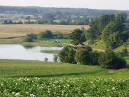
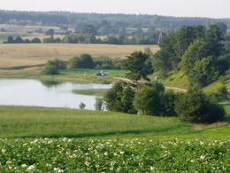

Angebot
tel. +48(58) 681 22 02 lub +48 502 039 045
WIR HABEN KONTAKT MIT DEM UNTERNEHMEN, DAS FLÜGE MIT EINEM GLEITER ÜBER KASHUBIA ORGANISIERT !!


 



Wo können Sie schlafen oder Ihre Zeit verbringen?
* Ein ganzjähriges Haus mit voller Ausstattung;* Wohnung mit Küche und Bad;
* Sie können in Ihrem eigenen Zelt oder Wohnwagen schlafen;
* Du kannst mit Heu in der Scheune schlafen :)
VERSCHIEDENE ATTRAKTIONEN
* Reiten, Kutschfahrten,ein Leiterwagen, im Winter KULIGI.
* Kanufahren auf Radunia.
* See 300m, Jar Raduni 1km.
* Angeln.
* Sauna, Grill, Kamin, Ferienhaus mit Kamin
* Ein Mini-Freilichtmuseum für landwirtschaftliche Werkzeuge.
* Kinderspielplatz, kleiner Zoo.
AUFENTHALTSREGELN
* Vorauszahlung für den Aufenthalt in Höhe von 30%zahlbar sofort nach der Buchung.
* Der Hoteltag beginnt um 14 Uhr.
und endet um 12.00 Uhr am nächsten Tag.
* Die Zahlung für den Aufenthalt wird in voller Höhe berechnet
bei der Ankunft auf dem Bauernhof.
* Bei früherer Abreise
Wir erstatten nicht die nicht genutzte Zahlung für den Aufenthalt.
ANKUNFT MIT EINEM HUND
* bei Buchung zu vereinbaren.TOURISTISCHE ATTRAKTIONEN DER REGION
IN DER NÄHE DES HAUSES :
* Kiełpino - historische Kirche, Retro-Zug Costerina,
Ein Touristenpfad in der Nähe der Grabhügel der Goten
* Kartuzy - Kashubian Museum, Kloster und Stiftskirche,
Park, historische Häuser
* Łapalice - Burg im Bau
* Rutki - historisches Wasserkraftwerk und Brücke
* Żukowo - Überreste des Norbertinerklosters, einer Wassermühle
* Kościerzyna - Lokomotivmuseum, Regionalmuseum
* Będomin - Museum der Nationalhymne
* Wdzydze Kiszewskie - Freilichtmuseum, Kashubian Ethnographic Park
* Chmielno - Museum für kaschubische Keramik
* Wieżyca - der höchste Gipfel in Pommern, ein Aussichtsturm
* Ostrzyce - Verleih von Wasserausrüstung
* Szymbark - verkehrtes Haus, die längste Planke der Welt
Andere Attraktionen :
* Łeba - Słowiński Nationalpark, bewegte Dünen
* Bytów - Deutschschloss, Museum
* Gniew - Deutschschloss, Ritterturniere, Feste
* Malbork - das größte germanische Schloss, Museum
* Trójmiasto - Denkmäler von Danzig, der Pier in Sopot,
Gdynia Oceanarium und andere Attraktionen
Preisliste:
* 1 Tag - 45 PLN / Person* längerer Aufenthalt - PLN 40 / Person pro Nacht
* Kind bis 10 Jahre - 20 PLN pro Tag
WIE FINDEN SIE UNS?
PROGRAMM-DOWNLOAD-TOUREN für Kinder im Vorschulalter oder Kinder aus den unteren Klassen der Grundschule
MEINUNGEN UND GÄSTEBUCH